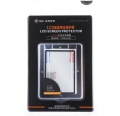

GGS金钢钢化玻璃保护屏（俗称金钢屏）是为防止屏幕撞伤和刮伤而设计的专业保护屏。其采用玻璃自动吸附和防眩光边框设计的工艺，真正实现了金钢屏与显示屏的无缝连接.支持相机旋转屏翻转闭合4:3普通屏：专用贴膜 重量：56g厚度：0.5mm材料：超薄光学玻璃原材可承受撞击力：12kg/cm2
口碑好
比贴膜耐用多了，在强光下反光减少，5d3原来贴的垃圾膜一到室外就看不清了，即使调最亮也悲剧，所以换了金刚屏
暂无
很好用
安装方便，一劳永逸 高透光 防刮能力出众 装在5D3上很放心
5分
不会影响700D的触摸感应，很好 比原厂保护盖好很多，轻薄，保护能力也好
暂无发现
用在60D上，做的很薄，不会影响翻转屏的使用 透光性很好 安装方便
不能防指纹